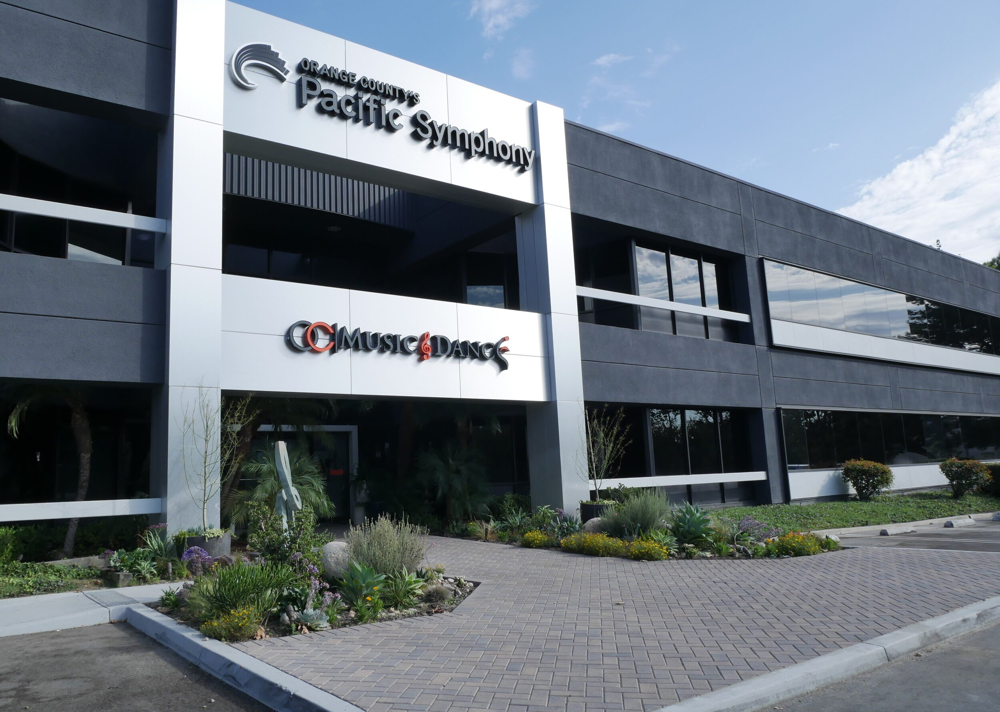

01
01Early Childhood
A playful introduction to music and movement.
Explore early childhood ↗
OC MUSIC & DANCE · IRVINE, CA
Music and dance education
for every stage of life.
YOUR NEXT CHAPTER
Room to begin.
Room to become.
01A playful introduction to music and movement.
Explore early childhood ↗ 02
02Find your instrument. Develop your own sound.
Explore music ↗ 03
03Build technique, confidence and a love of movement.
Explore dance ↗ 04
04Focused training for the musician ready to go further.
Explore music conservatory ↗ 05
05Dedicated preparation for the next stage of your training.
Explore dance conservatory ↗ 06
06Return to a passion. Make room for a new one.
Not sure where to begin?
THE OCMD EXPERIENCETHE PRACTICE. THE PROGRESS. THE POSSIBILITY.
The first note. The hours of practice. The courage to perform. Every part of the experience matters.
Explore the training, people and performance opportunities at OC Music & Dance.
Get to know OCMD ↗THE PEOPLE BEHIND THE PROGRESS
Meet the artists who
help you find your voice.
Explore OCMD’s faculty and find the experience and discipline that fit your interests.
Meet our faculty ↗POSSIBILITY SHOULD HAVE ROOM TO GROW
Support OCMD’s nonprofit mission.
Make a place for more people to discover the arts.
